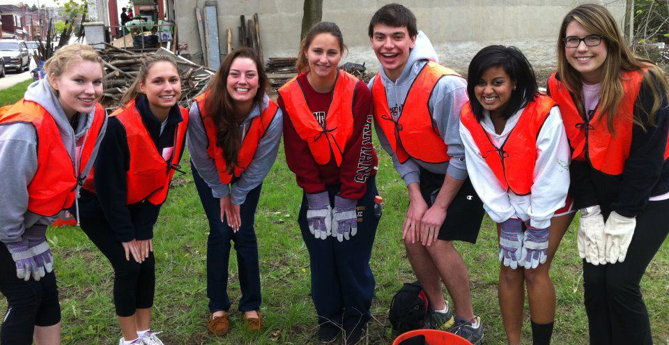

2015 Volunteer Sites
Animal Rescue League Shelter & Wildlife Center
Description:
The Animal Rescue League’s mission is to provide temporary shelter, food, medical attention, and comfort to all abandoned, neglected and injured animals brought to us by the community; to restore lost animals to their owners or seek new homes for them, and to educate the public about the humane care of animals with a goal of reducing overpopulation.
Activity: Cleaning and disinfecting on the inside of the shelter. Picking up litter, pulling weeds, shoveling gravel back into proper areas on the outside.
Activity: Cleaning and disinfecting on the inside of the shelter. Picking up litter, pulling weeds, shoveling gravel back into proper areas on the outside.
Arsenal Family & Children's Center
Description:
The mission of Arsenal Family & Children’s Center (AFCC) is to promote and to be an advocate for the healthy development of young children and support their parents in building a nurturing relationship with each child.
Activity: Outdoor clean up in the playground and around the Center.
Activity: Outdoor clean up in the playground and around the Center.
Boys and Girls Club Shadyside
Description:
The Boys & Girls Clubs of Western Pennsylvania enables all young people, especially those who need us most, to reach their full potential as healthy, productive, caring, responsible citizens. We are dedicated to enhancing the quality of life all youth who need us most. All programs and activities are designed to maximize opportunities for young people to build self-esteem and grow into responsible and caring citizens.
Activity: Cleaning and organizing the facility.
Activity: Cleaning and organizing the facility.
Catholic Charities
Description:
Catholic Charities is the primary social service agency of the Diocese of Pittsburgh, serving all, regardless of religious affiliation, at their time of great need. Catholic Charities is dedicated to championing the dignity of the person, improving the quality of life, and advocating for the social good of the human family, so that the poor and vulnerable, always welcomed and loved, embrace opportunities necessary to realize their potential.
Activity: Making "passing prayer" bracelets that will be handed out to our clients, cleaning our refugee floor out, preparing for our winter warming station, and organizing the pantry.
Activity: Making "passing prayer" bracelets that will be handed out to our clients, cleaning our refugee floor out, preparing for our winter warming station, and organizing the pantry.
Camp Guyasuta
Description:
Camp Guyasuta is owned and operated by the Laurel Highlands Council - Boy Scouts of America.The camp dates back to 1918 when it was donated by Mrs. Darlington, the great granddaughter of General O'Hara. Annually 20,000 scouts,school groups and non-profit organizations from Southwestern Pennsylvania region use the camp. Our Rohr Challenge Center teaches both youth and adults team work, conflict resolution, problem solving, leadership, self esteem building, trust and learning about each other. Our challenge course has been used by many youth agencies to learn to work together.
Activity: Volunteers will be assisting Camp Guyasuta with landscaping.
Activity: Volunteers will be assisting Camp Guyasuta with landscaping.
Craig Street Project
Description:
Craig Street is a vital part of the Carnegie Mellon community as it provides opportunities for eating, shopping, and relaxation. Join CMU students and staff to make the Craig Street corridor better for all who visit.
Activity: Volunteers will be picking up trash, sweeping, mulching and washing windows.
Activity: Volunteers will be picking up trash, sweeping, mulching and washing windows.
Global Links
Description:
Global Links is a medical relief and development organization dedicated to promoting environmental stewardship and improving health in resource-poor communities, primarily in Latin America and the Caribbean. Our two-fold mission provides hospitals with a socially and environmentally beneficial alternative to sending hundreds of tons of still-useful surplus materials to landfills.
Activity: Sorting and packing medical supplies to help improve health in resource-poor communities.
Activity: Sorting and packing medical supplies to help improve health in resource-poor communities.
Gwen's Girls
Description:
Gwen's Girls strives to empower girls and young women to have productive lives through holistic, gender-specific programs, education and experiences.
Activity: Volunteers will be beautifying the space.
Activity: Volunteers will be beautifying the space.
Habitat for Humanity ReStore
Description:
The Habitat for Humanity ReStore accepts donations of reusable home improvement and building materials. These goods are then sold to the public at deep discount. All proceeds from the sale of donations help place families in affordable shelter in the Greater Pittsburgh area. The ReStore provides an environmentally and socially responsible way to keep good, reusable materials out of the waste stream while providing funding for Habitat’s community improvement work.
Activity: The volunteers will be serving with the staff at the Habitat for Humanity ReStore in Edgewood. Volunteers will be helping the staff to process donations, provide customer service to families, and create displays of available items.
Activity: The volunteers will be serving with the staff at the Habitat for Humanity ReStore in Edgewood. Volunteers will be helping the staff to process donations, provide customer service to families, and create displays of available items.
Hosanna House
Description:
Hosanna House, Inc. is a multi-purpose community center serving over 35,000 people a year. Being a force for positive change, we persevere through prayer and hard work to provide families and individuals with hope and quality health and human services. Our mission is to provide opportunities that will empower families and individuals to discover, acknowledge and develop their maximum potential physically, spiritually and economically.
Activity: The volunteers will be moving furniture, cleaning weeds and leaves, planting grass, seeding, topsoil, and winterizing the facility.
Activity: The volunteers will be moving furniture, cleaning weeds and leaves, planting grass, seeding, topsoil, and winterizing the facility.
Light of Life Rescue Mission
Description:
Founded in 1952, the Mission was known as Harbor of Hope Rescue Mission where it served as a refuge for transient men and eventually, programs were expanded to include women and children. Now, Light of Life meets the immediate needs of the poor and homeless empowers men and women to achieve Christ-centered recovery, helps strengthen families and much more!
Activity: Volunteers will be assisting by sorting clothes.
Activity: Volunteers will be assisting by sorting clothes.
Mt.Washington Community Development
Description:
Established in 1990, the Mount Washington Community Development Corporation (MWCDC) is a 501c3, non-profit community development corporation serving the neighborhoods of Mount Washington and Duquesne Heights in Pittsburgh, Pennsylvania. Mt. Washington aims to cultivate growth, development and community investment.
It will be the number one neighborhood for residents, businesses and visitors in Pittsburgh. Mt. Washington carries out strategic priorities to achieve its mission. They are done through programs like business development, park and conservation management, real estate development, advocacy, public safety and marketing/outreach.
Activity: Volunteers will be helping to prepare a new tree restoration site.
Activity: Volunteers will be helping to prepare a new tree restoration site.
Pittsburgh Foodbank
Description:
Greater Pittsburgh Community Food Bank is a non-profit organization that collects and distributes food through a 380+ member network in 11 counties in southwestern Pennsylvania. Through food solicitation, fund raising, special events, and community partnerships, the Food Bank gathers food at our 94,000 square foot warehouse in Duquesne, PA. Through outlets such as soup kitchens, food pantries, shelters, after school programs, senior high rises, MH-MR drop-in centers, neighborhood food assistance agencies, emergency or disaster-related feeding sites, regional food banks, Meals on Wheels, community centers, and special programs, the Food Bank currently distributes around 27 million pounds of food per year. Greater Pittsburgh Community Food Bank is a member of Feeding America.
Activity: Volunteers will be helping with unloading and sorting produce before the distribution, then they will be responsible for helping hand out the produce with some volunteers helping to "run" groceries to client's cars or the bus stop. Carts will be provided in order to assist the elderly or infirm clients with the heavy produce, but they need trusty (and energetic) volunteers to help them with this.
Activity: Volunteers will be helping with unloading and sorting produce before the distribution, then they will be responsible for helping hand out the produce with some volunteers helping to "run" groceries to client's cars or the bus stop. Carts will be provided in order to assist the elderly or infirm clients with the heavy produce, but they need trusty (and energetic) volunteers to help them with this.
Pittsburgh Park Conservancy
Description:
Pittsburgh Parks Conservancy has worked closely with the City of Pittsburgh since 1998 under an official public-private partnership agreement to restore the city's four regional parks: Frick, Highland, Riverview, and Schenley. To date, the Parks Conservancy has raised over $74 million toward park improvements. In addition to completing 13 Capital Projects, stewarding over 1,700 acres, and working with thousands of volunteers annually, the Parks Conservancy has expanded into community and neighborhood parks as time and resources have permitted.
Activity: Volunteers will be helping us spread mulch in preparation for Mazeroski Day. We may also pull weeds in some of the flower beds.
Activity: Volunteers will be helping us spread mulch in preparation for Mazeroski Day. We may also pull weeds in some of the flower beds.
South Side Slopes Neighborhood Association
Description:
Our mission is to maintain, foster and improve the quality of life, safety and unity of our Slopes neighborhood.The South Side Slopes neighborhood is one of Pittsburgh’s jewels. Graced with spectacular views of the city and abundant green space, the Slopes provide affordable urban living just minutes from Downtown, Oakland, and the lively, historic Carson Street corridor. Narrow, winding streets and a network of steps connect this unique hillside garden community. Many of the homes on the Slopes, originally built for immigrant workers who flocked to the mills and factories at the turn of the century, are of a distinctive, vernacular Victorian style. With the closing of the steel mills and economic hard times, the Slopes neighborhood was neglected. Over the past few years, there has been a renewed interest in this community. Concerned residents organized to draw attention to the wonderful opportunities afforded by the Slopes and have been advocating for the needs of the Slopes. We must continue to have a voice where decisions are being made. We have a strong working relationship with local government and agencies who allocate their resources to maintain and upgrade this marvelous neighborhood.
Activity: Volunteers will be helping out at South Side Slopes' Pittsburgh StepTrek event.
Activity: Volunteers will be helping out at South Side Slopes' Pittsburgh StepTrek event.
Tree Pittsburgh
Description:
Tree Pittsburgh is an environmental non-profit organization dedicated to enhancing the City's vitality by restoring and protecting City trees. Their vision is to be a leader in creating a healthy, attractive and safe urban forest by inspiring and engaging citizens to maintain, plant and protect trees. Taking care of their trees will improve our quality of life by maximizing the substantial environmental, social and economic benefits that trees provide.
TreeVitalize
Description:
Responding to an alarming trend of the loss of trees in Pennsylvania’s metropolitan areas, TreeVitalize is a public-private partnership to help restore tree cover, educate citizens about planting trees as an act of caring for our environment, and build capacity among local governments to understand, protect and restore their urban trees.
Launched in 2004 in southeastern Pennsylvania. TreeVitalize has planted over 350,000 trees through the help of many partners and interested community volunteers. In spring of 2013, TreeVitalize will become available to all counties.
Tree-lined streets make communities look great, and they also clean the air, provide shade to cool buildings and paved areas, increase property values and help control storm water.
Activity: Volunteers will be assisting TreeVitalize with invasive plant removals along the trail, some flower bulb planting, and litter pick-up. Light snacks and water will be provided.
Activity: Volunteers will be assisting TreeVitalize with invasive plant removals along the trail, some flower bulb planting, and litter pick-up. Light snacks and water will be provided.
Western PA Humane Society
Description:
There are thousands of animals who are given up every year. Sometimes people lose their jobs and can no longer afford to take care of their pets or have to move and cannot take their pets with them. Other times people experience life-changing events, such as a divorce or new baby, and have to surrender their furry friends. As more and more shelters become "limited access," people have no other choice than to surrender their pets to an open-door shelter, that will never turn away a pet in need.
Because of the stigma that open-door shelters have, many people choose to make donations to limited access shelters, when, in-fact, it's the open-door shelters who need the money the most. The Western PA Humane Society helps over 10,000 animals each and every year - which is a lot of mouths to feed and medications to administer.
Activity: Volunteers will be assisting with renovation work, such as: painting, trash pick up on the dog walk route, planting flowers, etc. *They will not be hands on with the animals.
Activity: Volunteers will be assisting with renovation work, such as: painting, trash pick up on the dog walk route, planting flowers, etc. *They will not be hands on with the animals.
- © 2014-2015